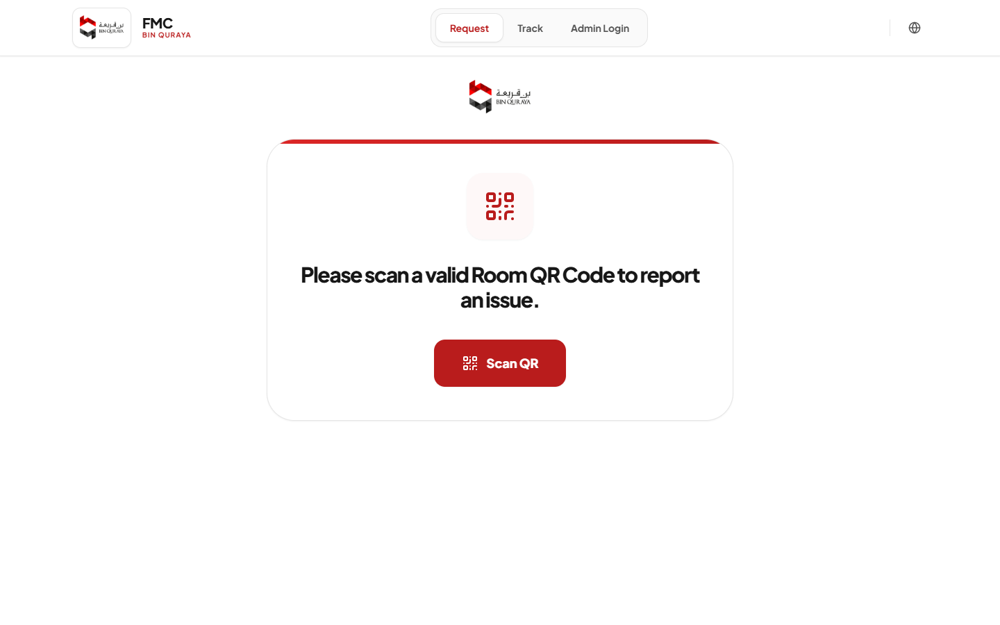
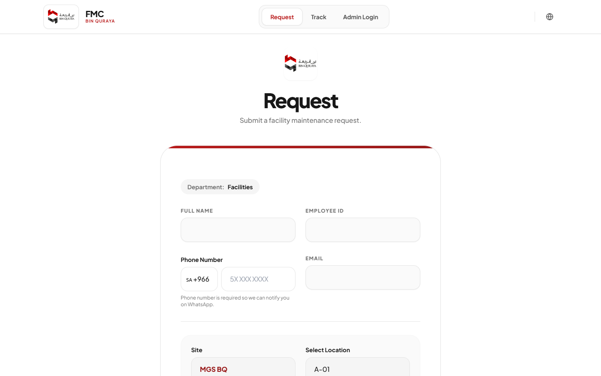
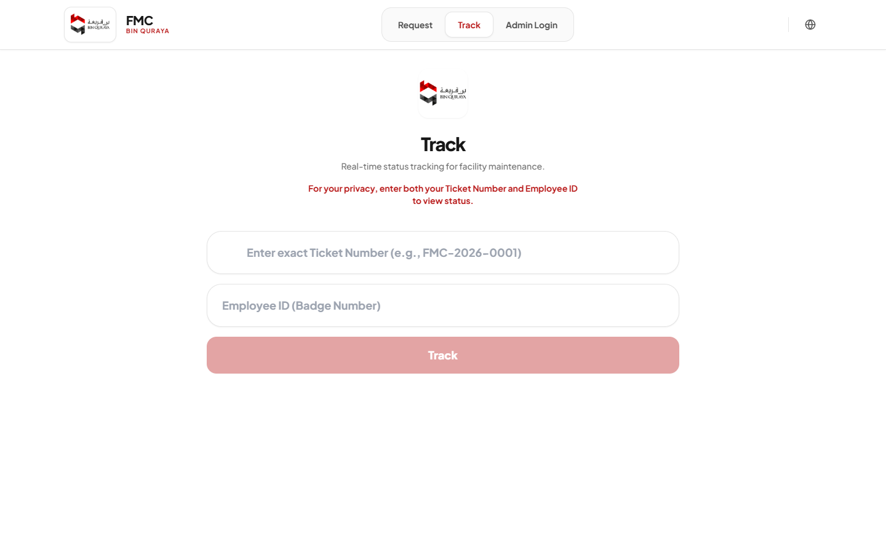
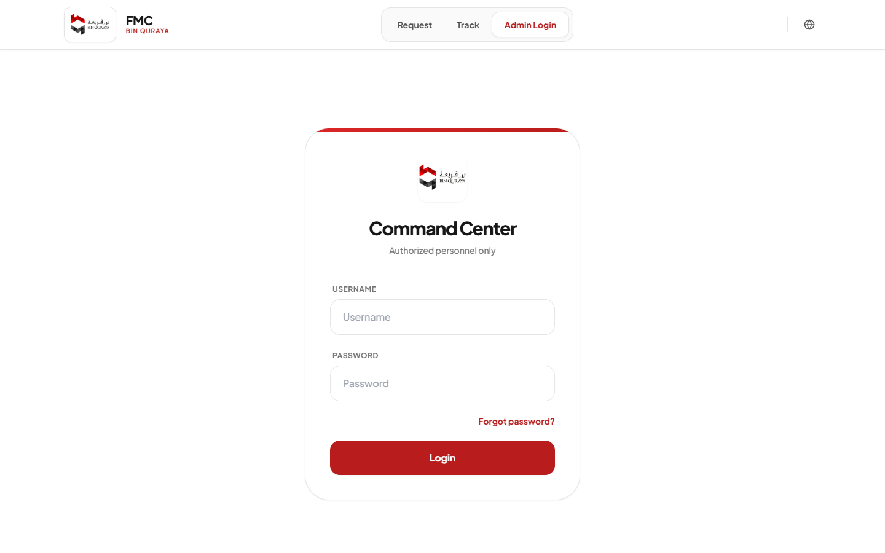
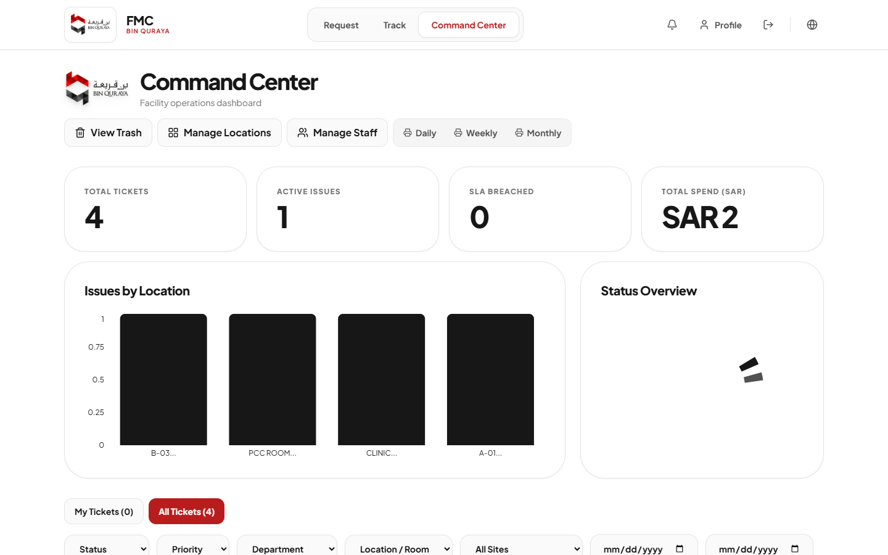
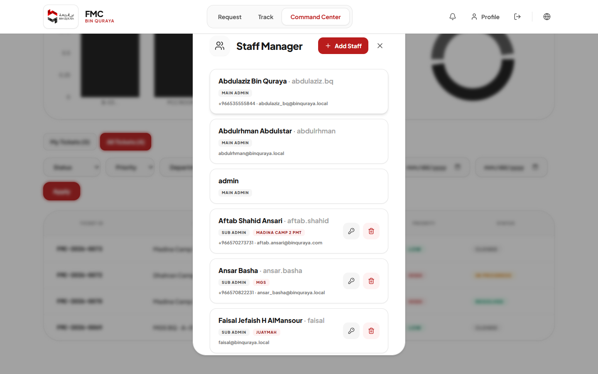
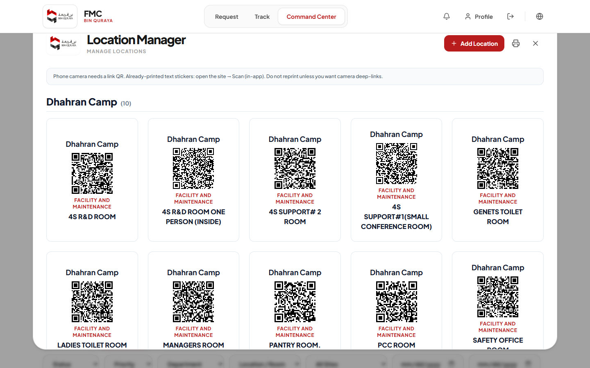
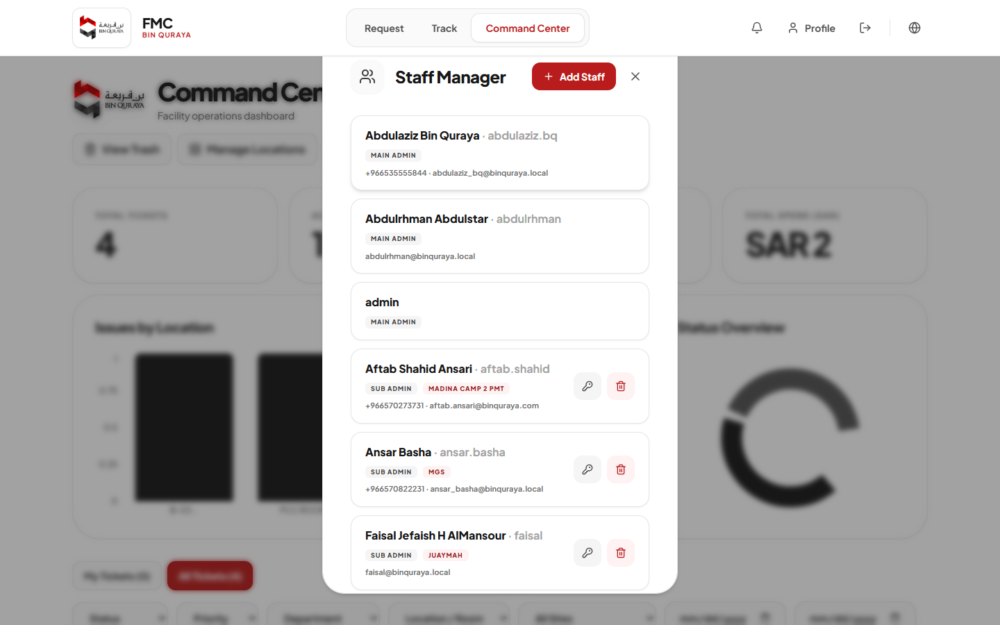

Screenshots below are taken from the live FMC system. Printed QR stickers should not be regenerated.
1. English — System Guideline
1.1 What is FMC?
Facility Maintenance Center (FMC) is Bin Quraya’s system for reporting and managing facility issues by scanning a room QR code. Ticket numbers use the FMC- prefix (example: FMC-2026-0001).
1.2 Report an issue (QR → Form)
Open the site or scan the room QR with your phone camera.
The report form opens for a valid room (location is locked).
Enter name, employee ID, phone (required for WhatsApp), asset, issue, priority, and notes.
Submit and keep your ticket number.

Live screen — Request / Scan QR gate

Live screen — Report form after a valid room QR (example: MGS BQ / A-01)
1.3 Track a ticket
Open Track, enter Ticket Number and Employee ID together, then view status (New → In Progress → Resolved → Closed).

Live screen — Track ticket
1.4 Admin login (Command Center)
Use Admin Login / Command Center with your authorized username and password.

Live screen — Command Center login
1.5 Dashboard
See totals, active issues, SLA Breached (New/Pending older than 24 hours), and spend.
Filter tickets by status, priority, department, location, and site.
Priority is visible in the ticket list.
Cost can be updated even after a ticket is Closed.

Live screen — Command Center dashboard

Live screen — Tickets list (includes Priority filter/column area)
1.6 Locations and QR codes
Open Manage Locations to view room QR stickers by camp. Do not regenerate printed QR tokens.

Live screen — Location Manager with QR stickers
1.7 Staff Manager
Create users with role and one or more sites.
Deleted/inactive users do not appear in Assign Technician.
Sub Admin / In-Charge with phone receives new-ticket alerts for their site.

Live screen — Staff Manager
٢. العربية — دليل استخدام النظام
٢.١ ما هو نظام FMC؟
مركز صيانة المرافق (FMC) هو نظام بن قريعة للإبلاغ عن أعطال المرافق وإدارتها عبر مسح رمز QR للغرفة. أرقام التذاكر تبدأ بـ FMC- (مثال: FMC-2026-0001).
٢.٢ تقديم بلاغ (QR ثم النموذج)
افتح الموقع أو امسح QR الغرفة بكاميرا الجوال.
يفتح نموذج البلاغ للغرفة الصحيحة (الموقع مربوط بتلك الغرفة).
أدخل الاسم، الرقم الوظيفي، الجوال (مطلوب للواتساب)، الأصل، نوع العطل، الأولوية، والملاحظات.
أرسل الطلب واحفظ رقم التذكرة.
من النظام مباشرة — شاشة الطلب / مسح QRمن النظام مباشرة — نموذج البلاغ بعد QR صالح
٢.٣ متابعة التذكرة
افتح Track، أدخل رقم التذكرة والرقم الوظيفي معاً، ثم شاهد الحالة.
من النظام مباشرة — تتبع التذكرة
٢.٤ دخول المسؤول
من Admin Login / Command Center باستخدام بيانات مصرّح بها.
من النظام مباشرة — تسجيل دخول لوحة القيادة
٢.٥ لوحة القيادة
الإحصائيات: إجمالي التذاكر، النشطة، تجاوز الوقت (أكثر من ٢٤ ساعة)، والتكلفة.
فلاتر الحالة والأولوية والقسم والموقع.
عمود/فلتر الأولوية ظاهر في قائمة التذاكر.
يمكن تعديل التكلفة حتى بعد إغلاق التذكرة.
من النظام مباشرة — لوحة Command Centerمن النظام مباشرة — قائمة التذاكر والأولوية
٢.٦ المواقع ورموز QR
من Manage Locations تشاهد ملصقات QR. لا تُعد توليد توكنات الملصقات المطبوعة.
من النظام مباشرة — مدير المواقع مع QR
٢.٧ إدارة الموظفين
إنشاء مستخدم مع دور وموقع واحد أو عدة مواقع.
المحذوفون لا يظهرون في قائمة التعيين.
مسؤول الموقع / Sub Admin يستلم تنبيه التذاكر الجديدة لموقعه عند وجود رقم جوال.
من النظام مباشرة — Staff Manager
۳. اردو — سسٹم گائیڈ لائن
۳.۱ FMC کیا ہے؟
Facility Maintenance Center (FMC) بن قریعہ کا سسٹم ہے جو کمرے کا QR اسکین کر کے سہولت کی خرابی رپورٹ اور مینج کرتا ہے۔ ٹکٹ نمبر FMC- سے شروع ہوتے ہیں (مثال: FMC-2026-0001)۔
۳.۲ رپورٹ کیسے درج کریں
سائٹ کھولیں یا فون کیمرے سے کمرے کا QR اسکین کریں۔
درست QR پر رپورٹ فارم کھلتا ہے (لوکیشن اس کمرے سے منسلک)۔